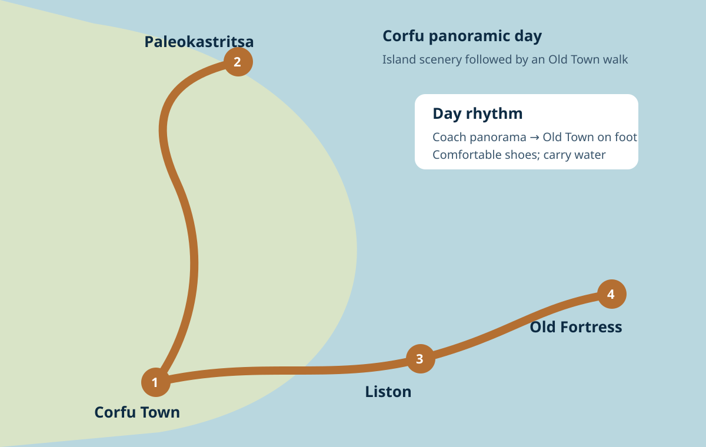

Map & Day Plan chapters
Map & day plan
Tap the map to enlarge. The island-drive line is schematic because the exact operator route can vary.

PortPanoramic drivePaleokastritsa areaOld TownListonFortress

Panoramic island orientation and the Old Town walking zone.
Tap the map to enlarge. The island-drive line is schematic because the exact operator route can vary.
